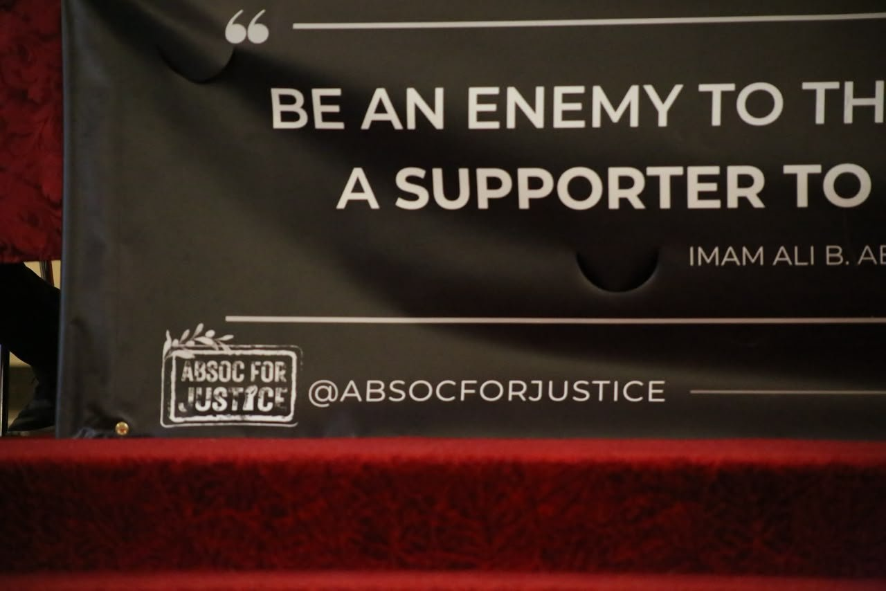

بِسْمِ ٱللَّٰهِ ٱلرَّحْمَٰنِ ٱلرَّحِيمِ
ABSoc for Justice
God-centric, strategic and purposeful advocacy.Rooted in Islam & the teachings of the Ahlul-Bayt.
We strive for justice by educating and mobilising Muslim students on the role and importance of political action in Islam — inspired by the life of Prophet Muhammad صَلَّى ٱللَّٰهُ عَلَيْهِ وَآلِهِ and his family.
Who we are
ABSoc For Justice (AFJ) is a network of Muslim students and activists organising on British university campuses and in communities across the country.
Islam is not a private ritual. It is a complete way of life and a theology of liberation, commanding every believer to stand with the oppressed against the arrogant powers who seek to dominate them. Our creed is the instruction Imam Ali left his sons: “Be an enemy to the oppressor and a helper to the oppressed.” [Nahjul-Balagha]
Read our mission
What we do
Contributing towards the building of political power for Muslims in Britain. We are an explicitly anti-Zionist and anti-imperialist organisation that supports political campaigns with shared objectives.
Researching and exposing the injustices faced by oppressed peoples worldwide, whilst empowering students to channel their efforts into meaningful action that delivers material impact.
Fostering unity around shared objectives, we connect Muslim students with lawyers, activists and relevant organisations, providing access to expertise, resources and networks that empower collective action.
Through mobilisations, educational workshops and ABSoc training, we cultivate political consciousness and equip students with the knowledge, skills and confidence to take bold and meaningful action.
Events